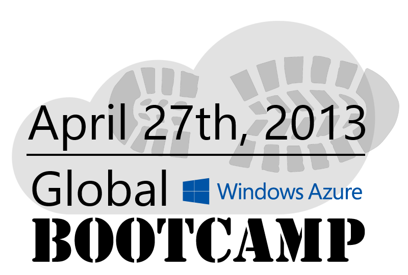
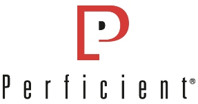

|  |
About
Welcome to Global Windows Azure Bootcamp! On April 27th, 2013, you’ll have the ability to join a Windows Azure Bootcamp on a location close to you. Why? We’re organizing bootcamps globally, that’s why!
Learn about locations, install the necessary prerequisites and get excited!
This one day deep dive class will get you up to speed on developing for Windows Azure. The class includes a trainer with deep real world experience with Windows Azure, as well as a series of labs so you can practice what you just learned.
Awesome. How much does it cost? How do I attend?
This event is FREE to the attendees! All you have to do is register and show-up!
Even more awesome! What’s the catch?
There’s no catch. Even the pro’s recommend this event.
What do I need to bring?
You will need to bring your own laptop and have it preloaded with the software listed here. Please do the installation upfront as there will be no time to troubleshoot installations during the day.
Is this for beginners?
Yes and no. The local trainers will use the Windows Azure Training Kit to guide you to the basics. We’ll also be running a massive scalability experiment that may bring one of the Windows Azure datacenters down!
There isn’t one near me? Now what?
For more information about this international event series click here.
Schedule (TBD)
| Time | Session | Details | Speaker |
|---|---|---|---|
| 9:00 - 9:30 | Welcome & Introductions | ||
| Lunch | |||
| 4:30 - 5:00 | Q&A and Wrap-up | ||
Speakers
-
Ryan Duclos
Lead Technical Consultant, Perficient
Ryan Duclos is a Lead Technical Consultant for Perficient, Inc. (PRFT), where he is passionate about Microsoft development utilizing the .Net Framework, SQL Server, and Windows Azure technologies. He lives and works in LA (Lower Alabama!) and loves spending time with his family, as well as being a Community Influencer for Microsoft. Ryan also loves to play Disc Golf! Ryan is the President of the Lower Alabama .NET User Group and is also involved with the Gulf Coast SQL Server User Group. In addition Ryan is a frequent speaker at numerous Code Camps, SQL Saturdays & User Group events.
Pre-Requisites
You’ll need a Windows Azure Subscription. If you don’t have one, you can sign up for a 90 Day Trial or if you have a MSDN Subscription you can use your Azure Benefits. You will need to provide a credit card to sign up, but both the Trial and new MSDN benefit Azure Subscription have a default spending cap of $0.00, so unless you remove the cap you will not be charged. You’ll use this subscription while working on the hands on labs.
A computer or laptop with:
Microsoft Visual Studio 2012 (full version or Visual Studio Express 2012 for Web) – do note if you use Express Edition you will not be able to complete all of the labs.
Install the Windows Azure Tools for Visual Studio
Install the Windows Azure Training Kit
Registration
Sponsors
-

Perficient
Perficient is a leading information technology consulting firm serving Global 2000 and enterprise customers throughout North America. With nearly 2,000 technology and business consultants, Perficient serves clients from a network of offices across North and three offshore locations, in Eastern Europe, India, and China. Perficient is an award winning leader in the social business space delivering solutions across the breadth of Microsoft technologies with key a focus on SharePoint as a delivery and integration platform, Microsoft BI using the Gartner Framework, Office 365, Lync Voice, Dynamics CRM and supporting infrastructure. Perficient leverages our other partner relationships to deliver integrated solutions and value to our clients. You can find us on the web at http://www.Perficient.com, http://blogs.perficient.com/microsoft, Facebook.com/Perficient & follow us on Twitter at @Perficient & @Perficient_MSFT.
-

Louisiana Technology Park
The Louisiana Technology Park is one of the South's premier business incubators providing high-tech start-up companies with the resources to bring their products and services to market faster and more effectively. If the word “incubation” brings to mind a warm, nurturing environment developed to protect a small, delicate creation, you’re only half right. Sure, The Louisiana Technology Park’s business incubator provides the resources to help foster young start-up companies’ growth so they can enter the “real world” prepared. However, rather than just a “nurturing environment,” we like to think of incubation as injecting our member companies with instant business enhancers and providing product and service supplements to speed growth all while surrounding them with the resources and professional expertise most start-ups can only dream about. That is, if they had time to dream, and weren’t so concerned about overhead, financing, accounting, administration and flat out failure.